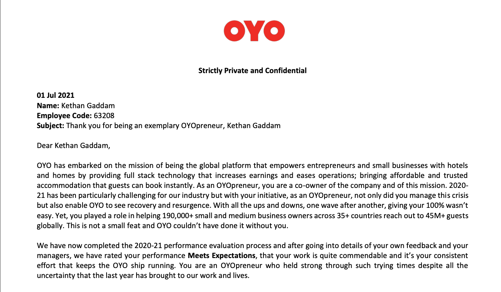

OYO ROOMS
Software Development Engineer
OYO Rooms also known as OYO Hotels & Homes, is an Indian multinational hospitality chain of leased and franchised hotels, homes and living spaces. I majorly ivolved in the migration process of Belvilla (a european based holiday homes company) to OYO called OYO Vacation Homes.
- Bad Debt Reduction
- Automated the process of Homeowners debt reminder system. Initially business managers used to manually send remainders. This has impacted around 2 Million Euros worth bad Debt
- Sole Onwer of the project right from finalising Product requiremnets to designing and approving Tech documentation and development.
- Created a cron job to automatically collects data from two microservices (Acounting Info + Homeowner Info) generates a PDF invoice and emials it to the homeowner.
- Designed rules for setting up triggers as when will a homeowner receive a reminder.
- Technologies Used: Progres4gl, Java and Quartz Scheduler.
- Belvilla to OYO Migration
- As part of Supply team I am responsible for handling properties and Inventory data for new OVH Site
- Held ownership for many supply components like Amenities, Airports data, Point of Interests and Property groups.
- As Migration needs to go parallely teams like Search, Pricing, Finance need supply data before we develop features. So, I created a Kafka producer application to send messages from Postgres DB to Kafka topics.
- Formulated Python scripts to migrate data from Belvilla stack to OYO stack using pandas and psycopg2.
- Created pages using Javascript in Homeowner site to display attachments
- Technologies Used: Progres4gl, Java , Kafka, Javascript, Ruby on rails, Python and PostgreSQL
